TWaver精彩问答——电信业务篇
http://twaver.servasoft.com/?p=1634
一. TWaver支持哪些格式作为数据来源?
二. 是否预定义适合电信应用的网元图标？是否可以表示网元的各种状态？网元图标是否支持拖动功能？链路是否随之更新显示？
三. 是否支持网元图标周围的小图标的定制功能？小图标是否支持各种操作功能（如弹出气球信息框，监听鼠标事件等）？多个小图标时是否能保证互相不被遮盖？小图标是否能随着网元的放大缩小而变化？
四. TWaver是否支持设备面板功能，包含哪些设备类型？对设备面板的定制功能如何？定制面板需要哪些步骤呢？
五. 对网元的告警统计和渲染情况支持如何？是否支持颜色定制，定制后的生效时间如何?
六. 是否支持父节点和子节点同时出现在网络图中？是否有ILOG的SubNetwork的概念？如果支持子网，子网和网络图之间是否支持链路，在子网展开和合拢时，链路如何处理？
七. TWaver是否支持图层控制？子网是否支持图层控制？网元和其旁边的小图标是否可以进行图层调整？
八. 树的根节点是否可以定制？TWaver是否对根节点进行封装？
九. TWaver是否支持缩略图？
十. TWaver是否支持对象过滤？可以按类型或指定对象进行过滤吗？
十一. TWaver的定制方式有哪些？（API或者文件）
一. TWaver支持哪些格式作为数据来源？TWaver支持API和XML两种方式作为组件的数据来源。API指的是用Java代码调用TWaver提供的API函数对TWaver的数据容器DataBox进行数据操作；
XML指的是用JavaBean标准格式的XML文本，对TWaver的数据容器DataBox进行数据操作。
其中，对XML的支持有以下特点：
支持对DataBox进行增加、修改、删除等操作；支持XML的导入、导出； 完全使用Java定义的JavaBean标准XML格式，无需第三方XML解析器，效率高； 支持基于URL的XML数据源，可实现远程XML驱动；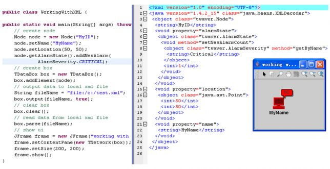 http://hiphotos.baidu.com/hxzon/pic/item/5b4570c61bb3c7489c163d3e.jpg
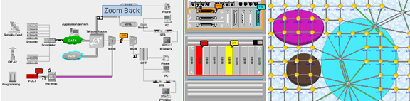 http://hiphotos.baidu.com/hxzon/pic/item/56bcfbfa6f0dfa8db58f313e.jpg
在TWaver中，每个图元都可以添加小的图标用于显示一些状态等网络实时信息，成为Attachment（附件）。Attachment是 TWaver一个重要的功能。在Attachment上，TWaver不仅仅可以显示静态的图标图片（包括动画GIF），可以显示任意复杂的动态效果，甚至支持任意Swing的Component作为Attachment。Attachment的位置、排序方向都可以有多种选择，并且位置和走向可以任意组合。例如，“放在左上角，多图标向右排列”。如果用户未指定，TWaver也会根据Element上自定义的Rule来对Attachment进行排序。此外，Attachment可以有展开、最小化、关闭等多种显示方式；可以跟随缩放；可以安装鼠标监听器（可以用于例如双击弹出详细界面等应用）。
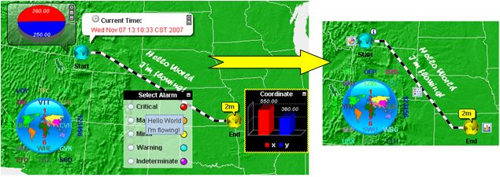 http://hiphotos.baidu.com/hxzon/pic/item/024013cebf8fdc6ab700c83e.jpg
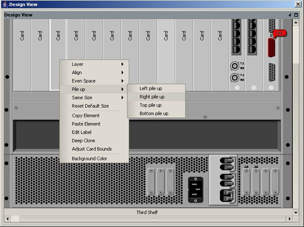 http://hiphotos.baidu.com/hxzon/pic/item/64fbf5de76d3850795ee373e.jpg
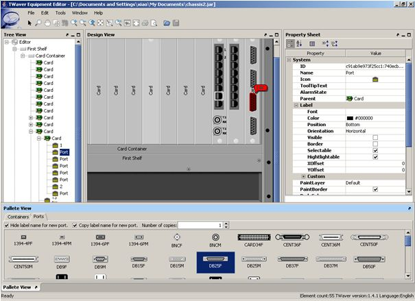 http://hiphotos.baidu.com/hxzon/pic/item/7f258a5450b2f94c3b29353e.jpg
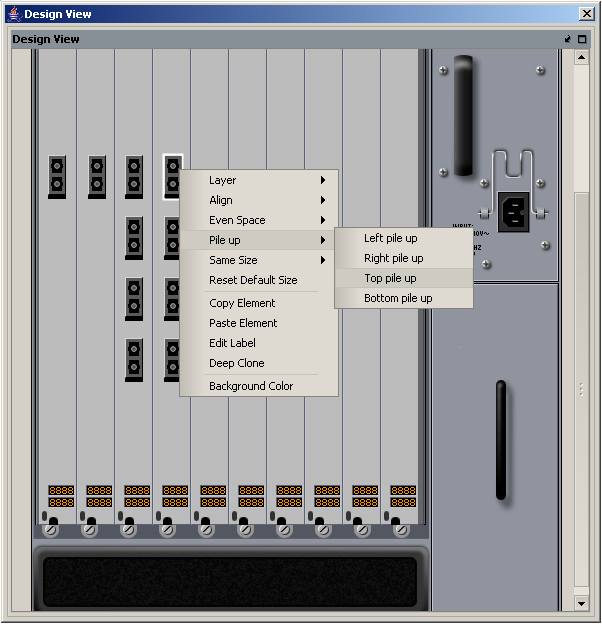 http://hiphotos.baidu.com/hxzon/pic/item/5f44f61ffc7524a6e1fe0b3e.jpg
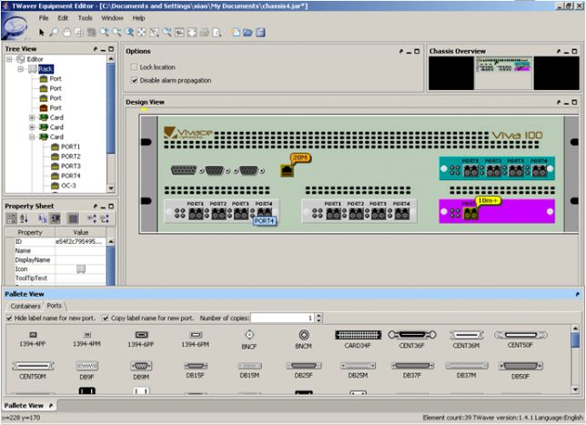 http://hiphotos.baidu.com/hxzon/pic/item/f1832bf528a29076bd31093e.jpg
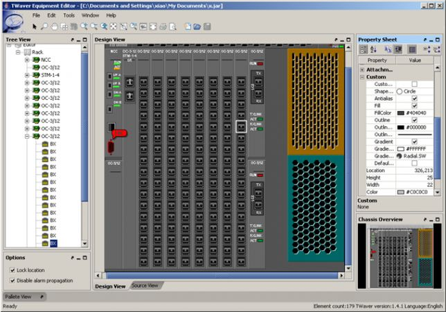 http://hiphotos.baidu.com/hxzon/pic/item/2b549f25766d553335a80f3e.jpg
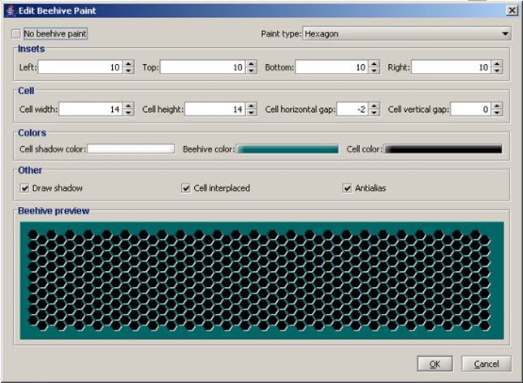 http://hiphotos.baidu.com/hxzon/pic/item/779b5a60f8f4578c8cb10d3e.jpg
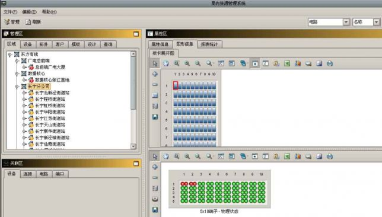 http://hiphotos.baidu.com/hxzon/pic/item/ff0258df43edc2404854033e.jpg
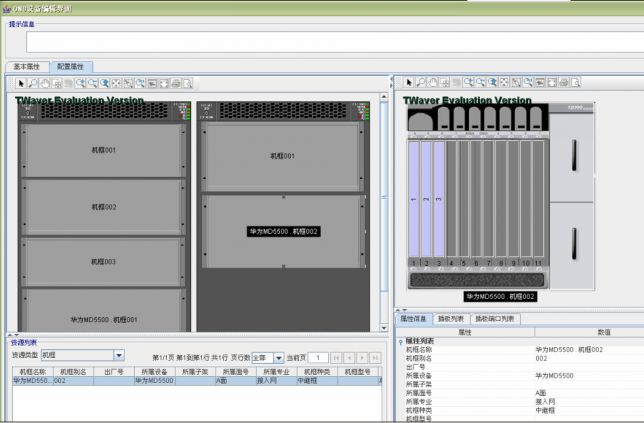 http://hiphotos.baidu.com/hxzon/pic/item/461bcd1399080070dc54013e.jpg
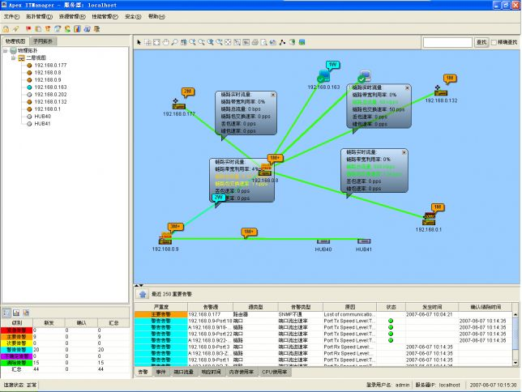 http://hiphotos.baidu.com/hxzon/pic/item/7daa3cf3b7dbe003342acc3e.jpg
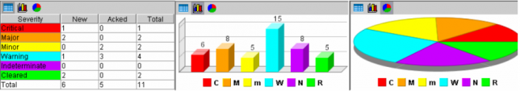 http://hiphotos.baidu.com/hxzon/pic/item/16fe504e4604d85ab2de053e.jpg
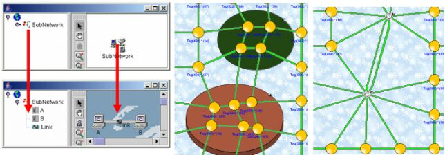 http://hiphotos.baidu.com/hxzon/pic/item/59f2d709658295d1d0581b3e.jpg
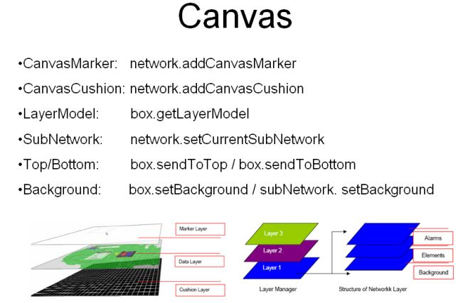 http://hiphotos.baidu.com/hxzon/pic/item/78749a820904c5ec6d81193e.jpg
TWaver的tree节点分为ElementNode和BoxNode两种类型节点，默认BoxNode为根节点，表达DataBox本身，它显示了DataBox的名字；其余所有节点都是ElementNode，对应网元节点（Element）。节点可以自定义通过tree. setElementIconGenerator进行自定义，tree.setRootElement可以切换任意根节点。
需要注意的是，默认的根节点本身并不是一个网元对象数据，也就是说，它在DataBox并不存在，它仅仅代表了DataBox本身。当然，这个默认的根可以被隐藏。
http://hiphotos.baidu.com/hxzon/pic/item/b4946109007c5e9c3ac7635b.jpg
http://hiphotos.baidu.com/hxzon/pic/item/05b19b1667bb8102f2de325b.jpg
TWaver的Overview是预定义的鹰眼组件，具有滚轮缩放、拖动平移，区域定位，双击恢复等操作功能，同时OverviewPane是内置的鹰眼面板，用户可以直接使用，并可以将鹰眼摆放在任意的位置，如下图:
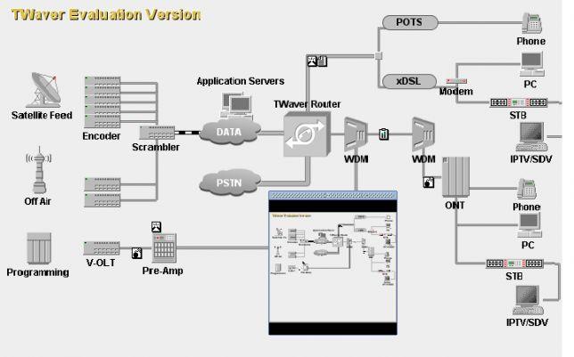 http://hiphotos.baidu.com/hxzon/pic/item/7a9f35fa62d7af4da9d3113e.jpg
过滤器Filter是TWaver核心概念之一，各种Filter无处不在。例如，在DataBox上有XML解析过滤器、XML输出过滤器、自定义属性过滤器等等；在Network组件中，有可见过滤器、拖拽过滤器、鼠标选择过滤器、鼠标双击过滤器、网元编辑过滤器、属性变化重绘过滤器、选择框绘制过滤器、调整大小过滤器、点击选择过滤、自动置顶过滤器，等等。在Tree、Table、PropertySheet等组件，也都提供了大量的过滤器，用于开发者对组件进行灵活的定制。
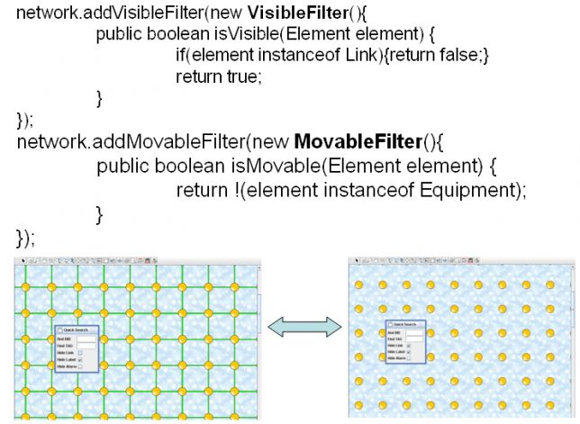 http://hiphotos.baidu.com/hxzon/pic/item/4921a01e4a8ff44c4034173e.jpg
TWaver是可扩展性非常强的组件，几乎任何图元任何组件的默认值都可以通过TUIManger进行全局属性注册进行调整，同时，每种类型Element都预定义了上百个的TWaverConst. PROPERTYNAME_***属性进行单独调整，还可以通过扩展Element对应ElementUI实现自定义的显示效果。
所有Element的扩展属性，都可以输入、输出到XML中，所以，可以直接在XML中定义这些属性，直接导入DataBox即可，也就是通过XML进行数据定制。
TWaver可视化组件的定制是通过API完成的，TWaver不支持通过CSS等方式对组件进行定制。
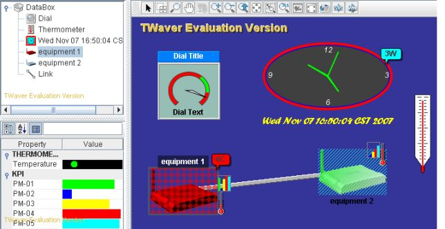 http://hiphotos.baidu.com/hxzon/pic/item/6379fb1fa5689e59314e153e.jpg